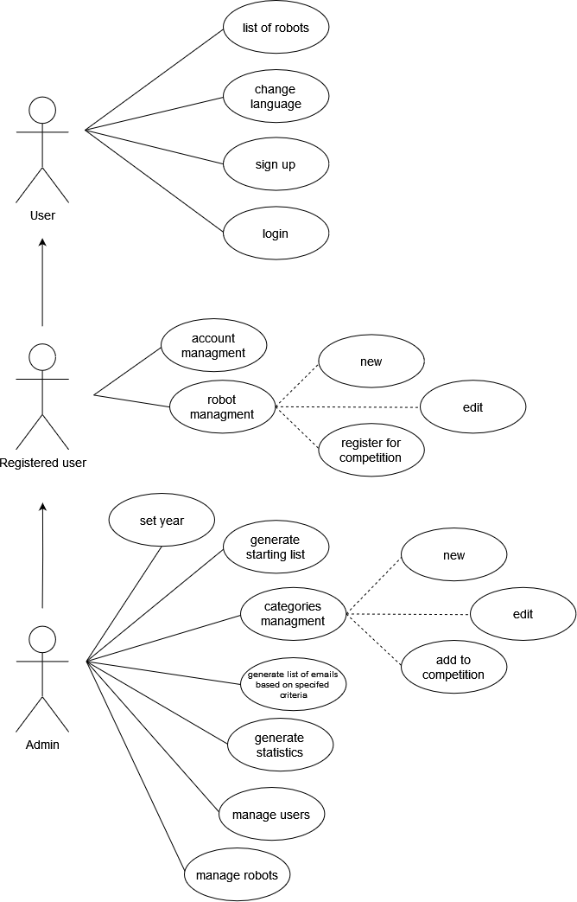

Istrobot (vlastní zadání)
- Autoři
- Michal Balogh
xbalog06@stud.fit.vutbr.cz -
Analýza a návrh informačního systému, backend - routing a kontrolery
- Tomáš Barták
xbarta51@stud.fit.vutbr.cz -
Návrh webového uživatelského rozhraní aplikace, vytváření pohledů a formulářů, lokalizace, světlá/tmavá téma
- Matěj Bedřich
xbedri04@stud.fit.vutbr.cz -
Úvodní stránka
- URL aplikace
- https://istrobot.up.railway.app/
- (stránku bude možná potřeba refreshnout - může být v režimu spánku aby se šetřili kredity dostupné ve free
verzi)
Uživatelé systému pro testování
| Login |
Heslo |
Role |
| admin@gmail.com |
admin123 |
Administrátor |
| johndoe@example.com |
password |
Účastník |
| - |
- |
Host |

Video
https://youtu.be/xq9fvH-Odik
Implementace
Stručná dokumentace implementace jednotlivých případů použití v systému:
Nepřihlášený uživatel
- Seznam přihlášených robotů - implementováno v ContestController, obsahuje metody pro úvodní
stránku s informacemi o soutěži
- Přepnutí jazyka - implementováno pomocí route v web.php a middleware SetLocale.
Lokalizované řetězce jsou v resources/lang
- Přihlášení - AuthenticatedSessionController obsahuje:
- create() - zobrazení přihlašovacího formuláře
- store() - zpracování přihlášení
- destroy() - odhlášení uživatele
- Registrace - RegisteredUserController obsahuje:
- create() - zobrazení registračního formuláře
- store() - zpracování registrace nového uživatele
Přihlášený uživatel
- Správa profilu - ProfileController obsahuje:
- edit() - formulář pro úpravu profilu
- update() - aktualizace profilu
- destroy() - smazání profilu
- Správa robotů - RobotController obsahuje:
- store() - uložení nového robota
- edit() - formulář pro úpravu robota
- update() - aktualizace robota
- destroy() - smazání robota
- Registrace robota na soutěž - DashboardController, metoda updateRegistration()
Administrátor
Implementováno v routes pod middleware auth a isAdmin.
- Nastavení roku - AdminController, metoda setYear()
- Správa kategorií - AdminController obsahuje:
- createCategory() - vytvoření kategorie
- deleteCategory() - smazání kategorie
- setCategory() - přiřazení kategorie k soutěži
- Startovací listina - AdminController, metoda generateStartList() pro generování náhodného
pořadí
- Správa emailů - AdminController obsahuje:
- allEmails() - seznam všech emailů
- emailsByYear() - emaily účastníků daného roku
- Statistiky - StatisticsController, metoda index() pro zobrazení statistik
- Správa uživatelů - AllUsersController obsahuje:
- list() - seznam všech uživatelů
- edit() - úprava profilu
- update() - aktualizace informací
- destroy() - smazání uživatele
- Správa robotů - AllRobotsController obsahuje:
- list() - seznam všech robotů
- edit() - úprava detailů
- update() - aktualizace informací
Databáze

Instalace
Postup instalace na server robotika.sk
Pro instalaci aplikace na cílový server je nutné držet se následujících kroků:
- Nainstalovat PHP a všechna potřebná rozšíření:
sudo apt install php php-cli php-mbstring php-xml php-curl php-zip php-mysql php-bcmath php-json
Následně ověřit, zda instalace proběhla v pořádku:
php -v
- Nainstalovat Composer:
curl -sS https://getcomposer.org/installer | php
Přesunout Composer do globální cesty:
sudo mv composer.phar /usr/local/bin/composer
Následně opět ověřit, zda instalace byla úspěšná:
composer -v
- Nainstalovat MariaDB:
sudo apt install mariadb-server
Volitelně je také možnost povolit spuštění MariaDB při startu systému:
sudo systemctl enable mariadb
Následně ověřit úspěšnou isntalaci MariaDB:
sudo mysql -u root
Změnit heslo uživatele root:
ALTER USER 'root'@'localhost' IDENTIFIED BY '';
FLUSH PRIVILEGES;
Ukončit MariaDB:
EXIT;
- Správně nakonfigurovat Laravel:
- Spustit aplikaci:
php artisan serve
- Inicializace databáze s testovacími daty:
php artisan migrate:fresh
php artisan db:seed
Deploy aplikace na Railway
Zatím sme nedostali plný přístup k serveru robotika.sk, proto jsme se rozhodli nasadit aplikaci na Railway:
- Vytvořit novou aplikaci v Railway a připojit ji k našemu GitHub repozitáři.
- Vytvořit databázi.
- Nastavit proměnné prostředí pre Railway app (příklad je v .env.example).
- APP_KEY se dá vygenerovat pomocí:
php artisan key:generate
- Propojit databázi s aplikací pomoci odkazování proměnných prostředí.
- Stáhnout a nainstalovat Railway CLI:
curl -s -L https://get.railway.app | sh
- Přihlásit se do Railway:
railway login
- Linkovat aplikaci:
railway link
- Inicializace databáze:
railway run php artisan migrate
railway run php artisan db:seed
Softwarové požadavky
- Composer verze 2.8.1
- PHP verze 8.1.2-1ubuntu2.19
- Laravel Framework 10.48.22
Jak rozbalit, konfigurovat, inicializovat databázi
Viz výše uvedené kroky pro konfiguraci Laravelu a inicializaci databáze.
Meno nebo heslo k databázi se dá změnit pomocou proměnných prostředí (v souboru .env).